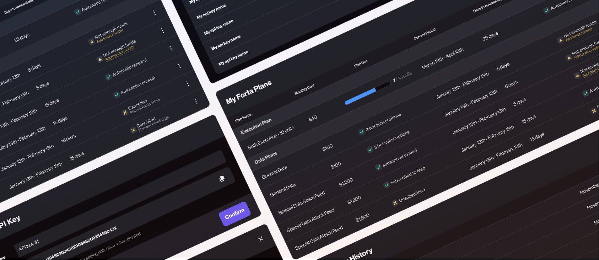
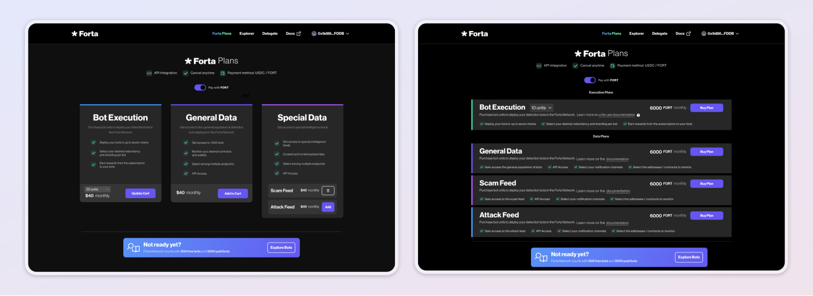
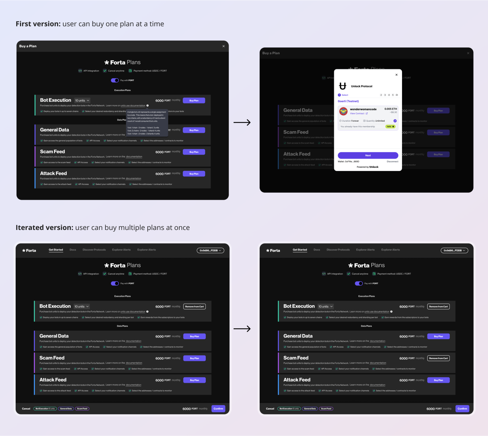
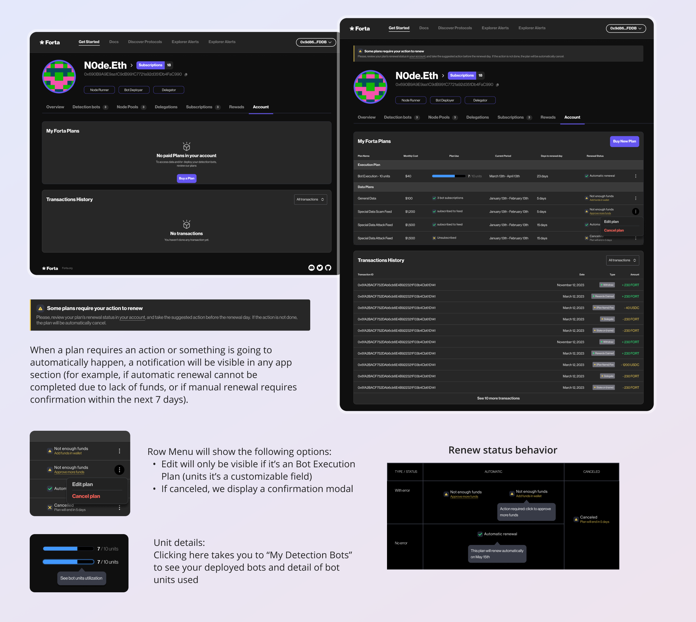
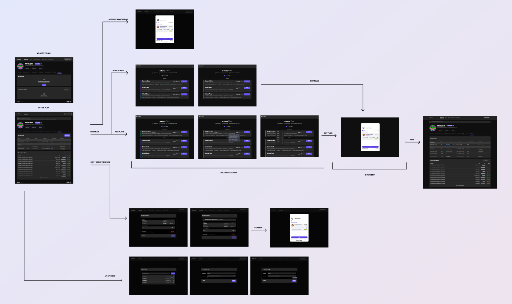
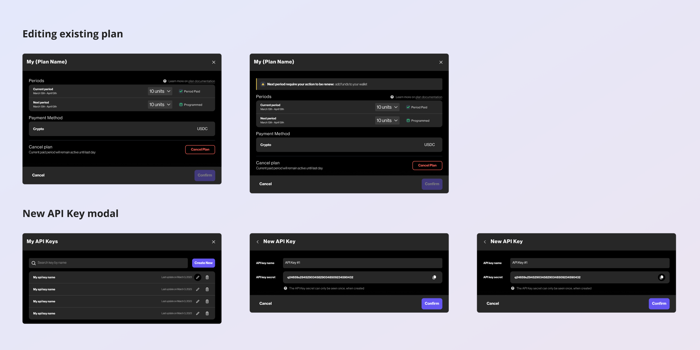

Forta: The Largest Network of Security Intel in Web3
Argentina · 2023 · Lead Product Designer
Context
Forta is a decentralized network of security experts and developers who build and maintain bots to detect threats and scams in Web3. It operates as both a B2B product and a developer community — enterprise security teams use it to protect their protocols, while individual developers contribute detection capabilities and earn rewards through Forta's internal economy, powered by the FORT token.
Users range from specialized developers at crypto companies integrating Forta's detection capabilities into their infrastructure, to independent contributors building and improving bots within the community. This dual nature — technical B2B product and incentivized community — shaped every design decision in this project.
The Problem
Forta had no monetization structure. Users could subscribe to any bot and integrate unlimitedly at no cost. The business needed to introduce paid services — but the challenge wasn't just adding a paywall. The services being introduced were structurally different from each other, each with its own configuration requirements, and users would likely need more than one. The design problem was: how do you let technical users understand, configure, and purchase a set of services with meaningful differences, without turning the experience into a multi-step form?
Three types of services needed to be supported:
- General Data: A straightforward subscription with no configuration.
- Special Data: Multiple independent feeds, each priced separately — users could subscribe to one or several.
- Bot Execution: Intended for developers; requires choosing the number of execution units needed.
All services could be paid with FORT tokens in addition to standard payment methods, reflecting the platform's internal economy.
Team
- Lead Designer: Stefania
- Manager: Project Manager
- Collaborators: Development team, involved throughout for technical feasibility constraints.
Design Exploration
The first challenge was figuring out the right mental model for how users would think about purchasing. Since these are independent services — not tiers of a single plan — the most natural interaction was an additive one: browse services, add what you need, confirm the purchase together. This mirrors how users already think about configuring tools in a technical environment.
I explored multiple layouts and purchase flows to find which best communicated the service differences and supported multi-service selection without becoming overwhelming. The key tension was between flexibility (letting users combine services freely) and clarity (making each service's configuration requirements understandable before committing).

The recommended flow — select multiple services, configure each, then confirm a single purchase — was the right UX answer. It matched the mental model, reduced friction, and kept the user in control. However, the first version couldn't support it due to technical constraints: the backend could only process one service purchase at a time.
Rather than blocking launch, we scoped the MVP to single-service purchase and planned multi-service support as a subsequent iteration. To reduce the awkwardness of this limitation in the UI, services already active in a user's account are hidden from the purchase list — keeping the flow clean and avoiding confusion about what's already owned.

User Profile
The profile needed to handle two very different states: a new user with no services yet, and an active user managing multiple subscriptions with distinct configurations.
For Bot Execution plans — where users choose a number of units — the profile shows units available vs. units in use, giving developers a clear operational view of their capacity. For all services, proactive alerts surface situations that could cause disruption, such as a payment failure that would trigger automatic cancellation. The goal was to surface these signals early enough for users to act, not after the service had already been cut.

Purchase Flow and Key Decisions
Several interaction decisions shaped the final flow:
- Direct access from profile: Users can initiate a new service purchase directly from their profile, without navigating to a separate marketplace page. This reduces steps for returning users who know what they want.
- Payment modal after selection: Configuration and payment are separated — users complete service setup first, then confirm payment. This prevents users from feeling locked into a decision before they've finished configuring.
- Active services hidden on purchase: When buying a new service, services the user already owns don't appear in the list. This prevents duplicate purchases and reduces cognitive load.
- API key access: Developers can generate and access new API keys directly from the service management view, keeping the technical workflow self-contained.


Impact and Learnings
The most instructive moment in this project was the gap between the recommended UX and what the first version could actually support. Multi-service purchase was the right solution — it matched the product's nature and user expectations. Scoping it out for technical reasons was the right call for launch, but it required careful UI work to prevent the single-service constraint from feeling like a product limitation to users.
Designing for a technically sophisticated audience changed the approach in specific ways. These users don't need protection from complexity — they need clarity about what they're configuring and why it matters. The Bot Execution plan's unit-based model, which might feel abstract to a general user, was entirely natural to the developer audience. Lean into the user's mental model rather than oversimplifying.
The dual nature of Forta — B2B product and community with an internal economy — also shaped the payment design. Supporting FORT token payments wasn't just a feature; it was a signal of respect for the community's own value system. In platforms with internal economies, integrating that currency into core transactional flows reinforces belonging and trust.